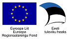

DHX protokolli etalonteostus
Sellel leheküljel on arendajatel võimalik testida, kas DHX protokolli võimekus on tarkvaras õigesti implementeeritud
Testimiseks on vajalik:
- Liidestumine X-tee arenduskeskkonnaga
- Kasutatavas turvaserveris on registreeritud DHXi alamsüsteem
- DHX alamsüsteemile on lisatud teenustele vastav adapterserver ning DHX teenuste WSDL
- DHXi teenused on avatud kõigile X-tee liikmetele (avatud X-tee globaalsele grupile "Kõik X-tee kasutajad")
Testimine
Arendajatele, kes soovivad DHX teenuse arendamisel kasutada etaloni testimiseks, soovitame kasutada DHX standardteste.
DHX protokolliga tutvujatele, kes soovivad DHX demonstratsiooni, soovitame „läbi mängida“ järgmised kasutuslood: etalonteostuse kasutusjuhend ja testilood.
Kasutamiseks on saadaval kolm etalonteostuse rakendust. Kõik rakendused on samaväärsed ja on võimelised dokumente saatma ja vastu võtma DHX dokumendivahetusprotokolli järgi (NB! järgmised lingid nõuavad id kaardiga autentimist!):
Etalonteostuse rakendus 1
Etalonteostuse rakendus 2
Etalonteostuse rakendus 3
Organisatoorne vaade

Tehniline vaade